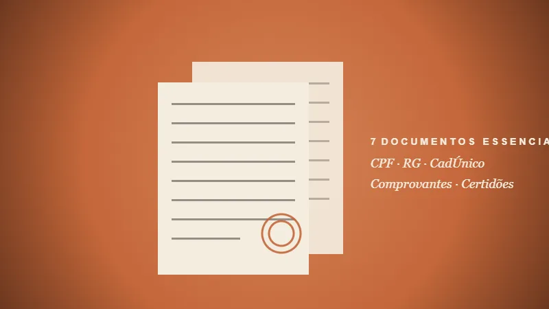

Quem tem direito ao BPC Idoso em 2026
O Benefício de Prestação Continuada — BPC/LOAS — para idoso é um direito constitucional garantido pela Lei 8.742/93 e regulamentado pelo Decreto 6.214/2007 . Ele paga 1 salário mínimo por mês (R$ 1.621) para idosos em situação de vulnerabilidade econômica, independentemente de terem contribuído ao INSS.
Para ter direito em 2026, você precisa atender a três condições simultâneas:
- Idade: 65 anos completos ou mais, no momento do requerimento;
- Nacionalidade: brasileiro nato, naturalizado, ou estrangeiro com situação migratória regular (CRNM, Protocolo de Refúgio, etc.);
- Renda familiar per capita: abaixo de 1/4 do salário mínimo — em 2026, isso significa menos de R$ 405,25 por pessoa do grupo familiar.
O que conta como "renda familiar" em 2026
Esse é o ponto onde a maioria das pessoas se engana. A "renda familiar per capita" é a soma de toda a renda das pessoas que moram na mesma casa, dividida pelo número de moradores. Entra:
- Salário com carteira assinada;
- Bolsa Família, Auxílio Brasil ou outros programas sociais;
- Aposentadoria ou pensão dos demais moradores;
- Renda de aluguel.
Não entra na conta: o próprio BPC que está sendo solicitado, nem outro BPC já recebido por morador da casa, nem benefícios eventuais como cesta básica.
Os 7 documentos essenciais
A documentação incompleta é a maior causa de negativa do BPC em 2026. Aqui está o checklist completo do que reunir antes de fazer o requerimento:
- CPF e RG do idoso requerente e de todos do grupo familiar. Todos precisam estar vivos no sistema da Receita.
- Comprovante de residência atualizado (último mês) — conta de luz, água ou telefone no nome do idoso ou de morador comprovado.
- Inscrição no CadÚnico — feita no CRAS do bairro. Atualizada nos últimos 24 meses. Esta é a etapa mais negligenciada.
- Comprovantes de renda de todos os moradores: holerite, carteira assinada, extrato INSS, declaração de autônomo.
- Certidões: nascimento, casamento ou óbito do cônjuge.
- Declaração de composição familiar assinada — modelo disponível no Meu INSS ou no CRAS.
- Procuração com firma reconhecida em cartório, se o idoso for representado por um familiar ou procurador.

Passo a passo: como pedir no Meu INSS
Em 2026, todo o requerimento pode ser feito online — sem precisar ir presencialmente à agência. Veja como fazer corretamente.
Antes de começar
Você precisa de uma conta no gov.br nível Prata ou Ouro. Se ainda não tem, eleve o nível no app gov.br via banco habilitado (Bradesco, BB, Caixa) ou com biometria facial.
Os 5 passos no Meu INSS
- Inscreva-se no CadÚnico no CRAS do bairro (ou atualize se já tiver). Esse é o passo zero — sem ele, o BPC nem é analisado.
- Acesse meu.inss.gov.br ou abra o app Meu INSS. Faça login com gov.br.
- Em "Pedir um benefício", escolha "Benefício Assistencial ao Idoso (BPC/LOAS)".
- Anexe os documentos digitalizados em PDF (cada arquivo até 5 MB). Use o app Gov.br Digitalizar ou Adobe Scan para fotos legíveis.
- Confirme e protocole. Anote o número do protocolo — você vai precisar para acompanhar.
Quer ajuda profissional desde o pedido?
A gente já analisou centenas de casos em Irajá/RJ. Mandagem agora pelo WhatsApp — análise inicial gratuita.
Falar no WhatsApp →3 armadilhas que negam seu BPC em 2026
Em 2026, observamos três motivos recorrentes como causas frequentes de negativa inicial. Conheça-os para evitar.
Armadilha 1 · CadÚnico desatualizado
Desde 2016 (Decreto 8.805/2016) e reforçado pela Decreto 8.805/2016, o CadÚnico é OBRIGATÓRIO e precisa estar válido — atualizado nos últimos 24 meses. É a causa #1 de negativa em 2026.
Armadilha 2 · Renda subdeclarada ou superdeclarada
Não declarar renda informal (bicos, aluguel não formal) pode ser cruzado pelo sistema. Por outro lado, ignorar deduções legítimas (como gastos com saúde do idoso, conforme a Lei 14.176/2021) faz a renda parecer maior do que é. Ambos os erros derrubam o pedido.
Armadilha 3 · Composição familiar incorreta
Em 2026, "família" para o BPC inclui cônjuge, filhos solteiros menores ou inválidos, e pais que vivem na mesma residência. Filhos casados ou que moram fora — mesmo se ajudam financeiramente — NÃO entram. Errar isso é mais comum do que parece.
"A maioria das negativas que vejo não é por falta de direito — é por documentação mal organizada. Por isso a análise prévia faz tanta diferença."
O que fazer se o INSS negar
Receber uma carta de negativa do INSS é frustrante — mas não é o fim. O recurso administrativo é um direito garantido e, segundo dados públicos do INSS e do CRPS, uma parcela significativa das negativas é revertida quando a documentação inicial era incompleta.
Você tem 30 dias para recorrer
A contar da data da carta de comunicação. O recurso vai para o Conselho de Recursos da Previdência Social (CRPS) e tramita em duas instâncias: Junta de Recursos (JR) e Câmara de Julgamento.
Se o recurso administrativo também for negado, ainda existe a possibilidade de ação judicial — que no caso do escritório CarlosCostaPrev é conduzida pelo sócio responsável pela área judicial.